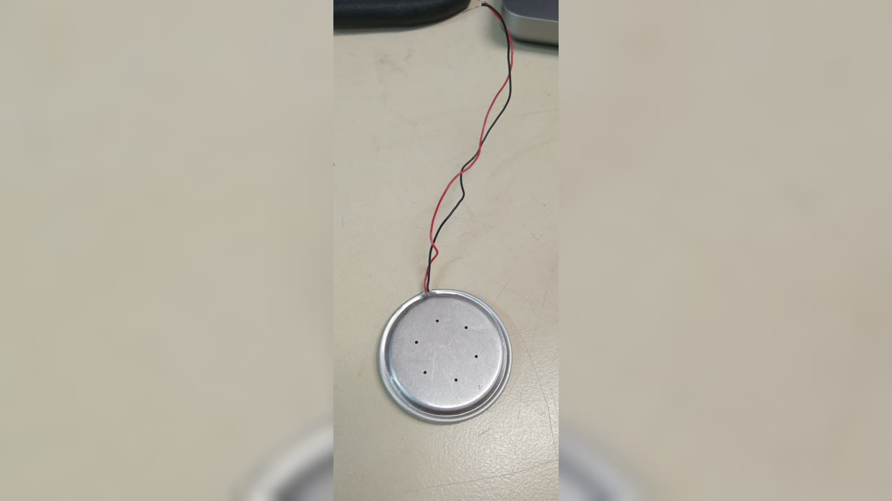
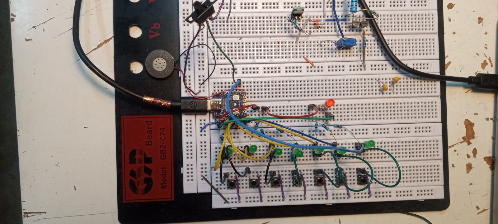
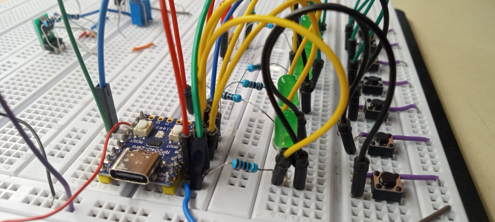
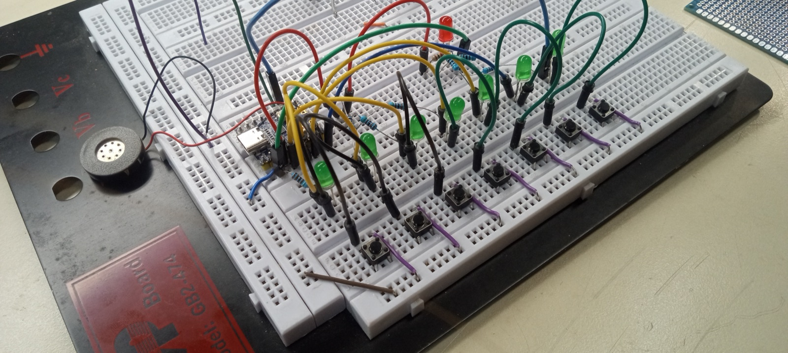
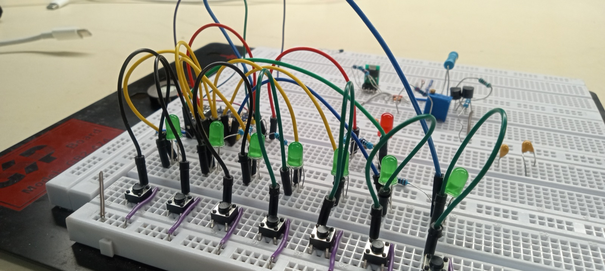
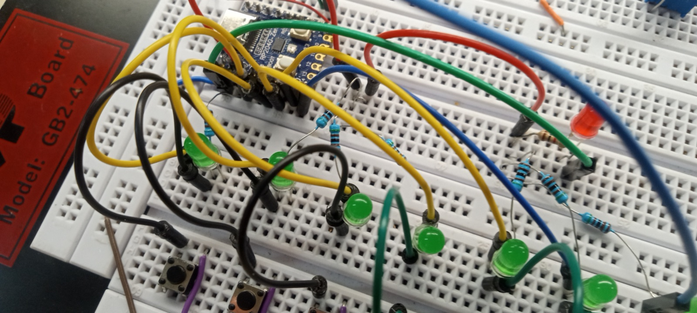
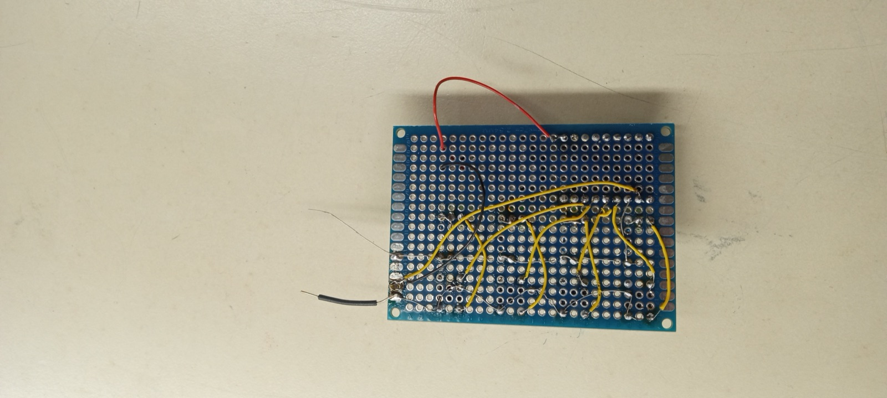
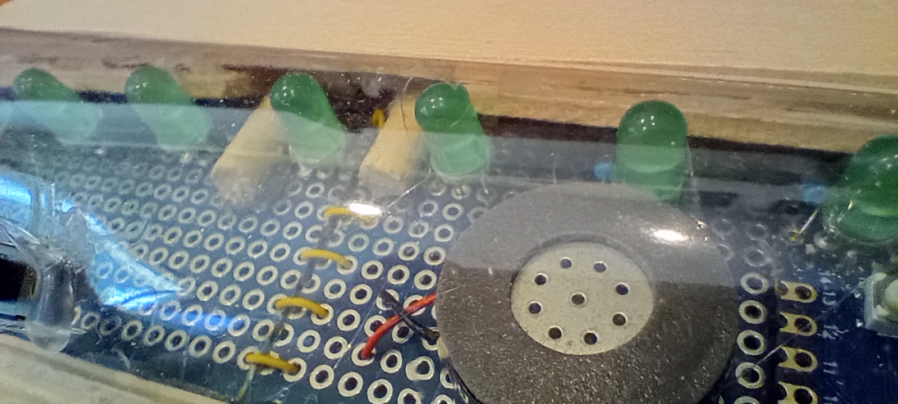

I began with just testing out a buzzer.

Project snapshot
My arduino piano project is my first arduino project. It functions as an 8 key piano. A switch changes the sound from piano notes to a wide range of hertz sounds. I used C++ code to program the microcontroller.
The materials I used are:
Code
#include <Arduino.h>
const int BUZZER_PIN = 8;
const int BUTTON1_PIN = 29;
const int BUTTON2_PIN = 28;
const int BUTTON3_PIN = 27;
const int BUTTON4_PIN = 26;
const int BUTTON5_PIN = 15;
const int BUTTON6_PIN = 14;
const int BUTTON7_PIN = 7;
const int BUTTON8_PIN = 6;
const int SWITCH_FREQUENCY = 5;
int buzzerFrequency1 = 1000;
int buzzerFrequency2 = 1000;
int buzzerFrequency3 = 1000;
int buzzerFrequency4 = 1000;
int buzzerFrequency5 = 1000;
int buzzerFrequency6 = 1000;
int buzzerFrequency7 = 1000;
int buzzerFrequency8 = 1000;
void setup()
{
pinMode(BUZZER_PIN, OUTPUT);
pinMode(BUTTON1_PIN, INPUT_PULLUP);
pinMode(BUTTON2_PIN, INPUT_PULLUP);
pinMode(BUTTON3_PIN, INPUT_PULLUP);
pinMode(BUTTON4_PIN, INPUT_PULLUP);
pinMode(BUTTON5_PIN, INPUT_PULLUP);
pinMode(BUTTON6_PIN, INPUT_PULLUP);
pinMode(BUTTON7_PIN, INPUT_PULLUP);
pinMode(BUTTON8_PIN, INPUT_PULLUP);
pinMode(SWITCH_FREQUENCY, INPUT_PULLUP);
tone(BUZZER_PIN, 1000, 500);
Serial.begin(9600);
}
void loop()
{
int switchState = digitalRead(SWITCH_FREQUENCY);
if (switchState == LOW)
{
buzzerFrequency1 = 50;
buzzerFrequency2 = 100;
buzzerFrequency3 = 200;
buzzerFrequency4 = 350;
buzzerFrequency5 = 550;
buzzerFrequency6 = 700;
buzzerFrequency7 = 900;
buzzerFrequency8 = 1100;
}
else
{
buzzerFrequency1 = 261.63;
buzzerFrequency2 = 293.66;
buzzerFrequency3 = 329.63;
buzzerFrequency4 = 349.23;
buzzerFrequency5 = 392.00;
buzzerFrequency6 = 440.00;
buzzerFrequency7 = 493.88;
buzzerFrequency8 = 523.27;
}
int buttonState1 = digitalRead(BUTTON1_PIN);
int buttonState2 = digitalRead(BUTTON2_PIN);
int buttonState3 = digitalRead(BUTTON3_PIN);
int buttonState4 = digitalRead(BUTTON4_PIN);
int buttonState5 = digitalRead(BUTTON5_PIN);
int buttonState6 = digitalRead(BUTTON6_PIN);
int buttonState7 = digitalRead(BUTTON7_PIN);
int buttonState8 = digitalRead(BUTTON8_PIN);
if (buttonState1 == LOW)
{
tone(BUZZER_PIN, buzzerFrequency1);
delay(100);
}
else if (buttonState2 == LOW)
{
tone(BUZZER_PIN, buzzerFrequency2);
delay(100);
}
else if (buttonState3 == LOW)
{
tone(BUZZER_PIN, buzzerFrequency3);
delay(100);
}
else if (buttonState4 == LOW)
{
tone(BUZZER_PIN, buzzerFrequency4);
delay(100);
}
else if (buttonState5 == LOW)
{
tone(BUZZER_PIN, buzzerFrequency5);
delay(100);
}
else if (buttonState6 == LOW)
{
tone(BUZZER_PIN, buzzerFrequency6);
delay(100);
}
else if (buttonState7 == LOW)
{
tone(BUZZER_PIN, buzzerFrequency7);
delay(100);
}
else if (buttonState8 == LOW)
{
tone(BUZZER_PIN, buzzerFrequency8);
delay(100);
}
else
{
noTone(BUZZER_PIN);
}
}I began with just testing out a buzzer.

Then I added buttons to the buzzer. It worked but it was very clunky. I soon realized that it would be better to use small buttons and make the physical piano key separately.
I used new buttons and a smaller buzzer for my final version using a bread board.





Then I moved on to actually soldering the components. This part was the hardest because I was new to soldering electronics. I also found it difficult to visualize where to connect the wires.

I finished up with a plastic and wooden case.
